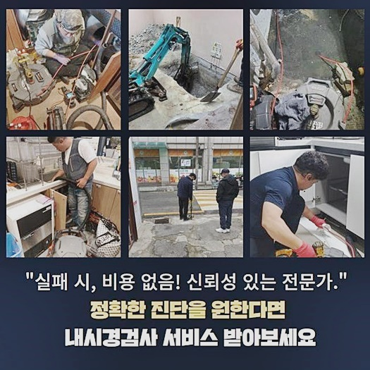
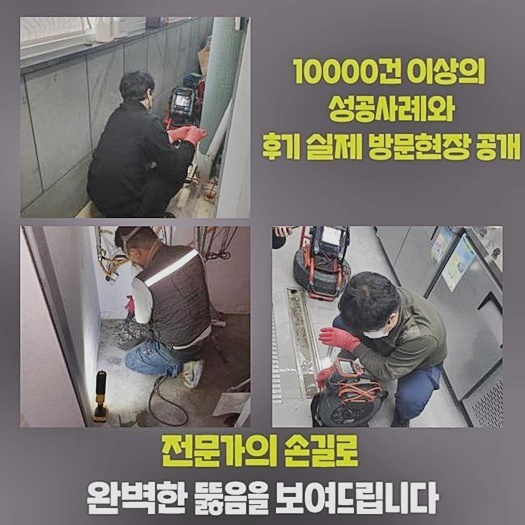
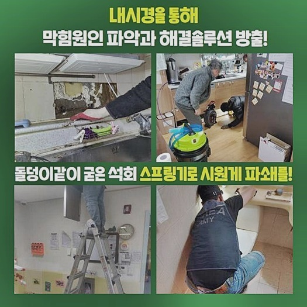
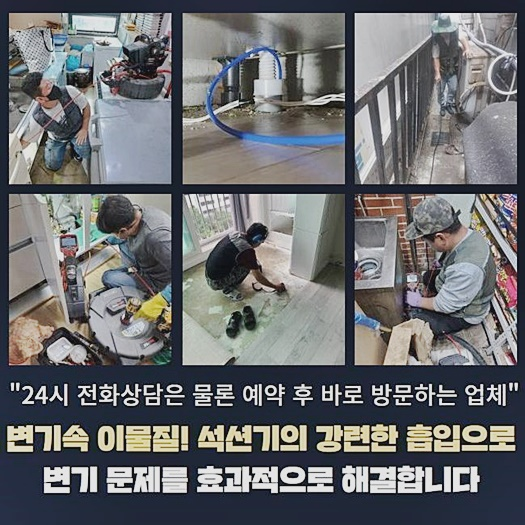
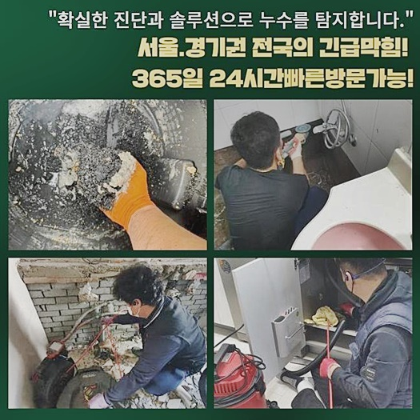
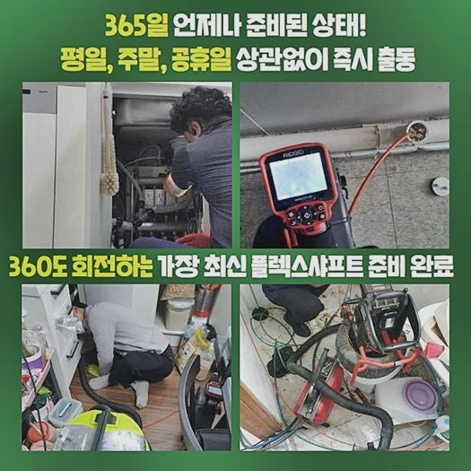

🏠 동작구 흑석동씽크대배수구역류 사당동 집수정청소 누수공사
용인 싱크대막힘 전문 시공 후기

📋 작업 개요
- 위치: 용인
- 서비스 유형: 싱크대막힘, 변기막힘, 하수구막힘, 배관막힘, 집수정막힘, 누수수리, 역류해결, 뚫는업체, 배관청소, 고압세척, 설비공사, 악취차단
- 작업 일시: 2024. 9. 3. 15:13
- 업체명: 하수구수사대 (010-5615-2118)
🔍 문제 상황
동작구 흑석동씽크대배수구역류 사당동 집수정청소 누수공사
집안의 파이프는 오랫동안 기능을 수행하다보면 조금씩 약화되면서 다수의 문제들을 유발할 수 있는데요
이처럼 시설이 오래될수록 통로에 물때 및 이물질이 생성돼서 통로 자체를 메워버리고 겹겹이 층을 이루듯이 오염물이 누적되어서 결국에는 막힘문제가 불현듯 일어납니다
내부 이물질을 분류해 보면 탈락한 모발이나 털과 세제 분진이나 먼지가 있는데 이것들이 소량씩 더해진다면 똘똘 결집하여 생활용수의 폐기 통로를 온전히 꽉 막아서고 마는 겁니다
예전에 지어진 건물이라면 정기성있는 청소 작업과 전문케어가 필요한데 이것을 통하여 사고를 미리미리 조치하는 것이 열쇠입니다
약한 막힘증세만 있을 때 오류를 발견하고 전문적 청소를 해주는 게 심한 공사를 막아서는데 핵심적인 역할이기 때문입니다
구조물이나 시설에 끼치는 피해가 줄어들 수 있게끔 건물의 안전을 위해 정기적으로 검진이 필요하다 싶으면 적합한 방책을 세우는 것이 열쇠입니다
이번 현장은 아파트 형태의 건물이라서 상당한 수의 호수에 영향을 주는 데미지가 확대되는 상황이라 상당히 긴박하게 출장을 갔습니다
타 하수구 업체가 예전에 출장갔으나 무엇 때문인지 내지 못하고 물러났다는 점을 전달받고 나니 단순한 막힘이라기 보다는 해결까지 신중하게 임해야 성공할거라고 판단하여 만반의 준비를 했네요
많은 성공건을 보유한 업체이기에 철저한 작업으로 문제를 해소해 드리려고 다짐했네요
각각 여러 기능을 보유하고 있는 툴과 기계를 챙겨넣고 전화주셨던 그 장소로 도달했습니다

🔎 원인 분석
💡 전문가 진단: 정밀 진단 장비를 사용하여 슬러지의 고착 여부를 판명하고 타격/세척 작업을 실시했습니다.
고객님이 안절부절 못하는 표정을 보여주셔서 사건이 크다는 상황을 대강 알게 됐어요
개선을 위한 작업에 바로 들어가는 것이 아니라 어떤 방향으로 작업이 착착 이어질 것인지 친절히 말씀을 드리면서 마음의 안정을 드렸어요
꽉 막힌 배관을 개선하기 위해 반복적으로 청소를 해가면서 통행하는 유량이 늘어가는 과정을 통과하게 됩니다
새로운 관로를 확보한 듯 화사하고 밝은 파이프에 많은 양의 하수도 시원하게 빠져나가는 것을 성과로 상정을 해두고 시공을 이행하게 되는 것입니다
다량의 노폐물들을 척결해 나가면서 너무 다량의 오염원들이 누적되어 있어서 긁어내기가 영 쉽지 않은 섹션도 보였습니다
다양한 종류의 막힘을 다뤄온 저희 숙련진들은 유연한 대처능력과 기계들을 통해서 조속히 파악을 하고 나서 시설물의 난관을 극복해 나갑니다!
상황을 잘 분석하려면 다양한 케이스를 다뤄온 경험이 충만하게 보유되어야 합니다
원인이 모호하다면 다시 같은 일이 발생할 수 있고 호쾌하게 내려가는 모습을 극복할 수 없기 때문이죠
현장마다 근본적인 이유와 얼마나 심각한지 여부도 차이점이 있고 막힘을 만든 원인의 위치에 따라서도 진입점이 딴 판으로 변화하기도 해요
실패하고 돌아간 지난 업체도 변기 시설물만 대충 살피고 변기에 달린 오수관까진 관측을 안하는 것 같았다며 작업 내역을 밝혀주셨어요
기대가 실망으로 돌아간 상황이라 심적인 고통이 가중되어 버렸을 것이 당연하기에 얼른 낫게 해 드리고자 고압청소를 했습니다
정상적인 물의 운반을 방해하는 노폐물들을 소거시키기 위해서 고압수를 통한 세척을 해줬는데 내부의 물티슈가 주된 촉매제가 아닐까 결론내렸네요

🔧 작업 과정
하나하나 덜어내는 활동이 필요했으므로 많은 시간을 투자해야 했지만 잔여하는 휴지 한 장도 없게 끝까지 세척에 신경썼어요
물티슈는 질긴 편이라서 결코 변기통에 던져 넣지 않고 물티슈를 쓰셔야 하는 것을 신신당부했습니다
집안에 있는 화장실을 전혀 쓸 수 없는 사태를 장기간 직면하셨기 때문에 얼른 관로를 개방시키는 게 한시가 급한 문제였습니다
욕실을 더 자세히 보니 하수구가 봉인되어서 거꾸로 샘솟는 사태까지 벌어진 좋지 못한 상태였어요
초반에 가볍게 뚫는다면 보다 심플하겠지만 침전물들이 딱딱하게 굳어버린다면 다른 추가적인 사안들을 줄지어 생기게 만드니 적극적으로 처리에 앞장서야 합니다
상황을 가볍게 점검하는 것만으로도 이슈가 생긴 쪽이 감지되지만 겸손한 마음을 가지고 오수관의 문제점을 연구해 보았습니다
하수구 뚜껑을 여니까 꼬릿한 하수구냄새가 치고올라왔고 오래된 이물질로 인해서 배관 속이 조금의 여유도 없이 집적되어 있어서 조금의 물도 흘러가지 못한 거였죠
썩은 듯한 냄새는 시설의 이용자분들에게 울렁거리는 증상을 유발하고 도배지나 목재 가구 등에도 냄새입자가 들어가게 됩니다
하수의 이동경로에 일어나는 요소들의 영향으로 집안이 오염된다면 호흡기나 피부 질환까지도 나타날 수 있는 문제의 씨앗이 될 수 있어요
실내 중에서도 욕실이라면 시설물과 몸이 맞닿는 경우들이 대부분이기 때문에 필히 주의를 해야하는 지역이라는 점을 알려드리고 싶습니다
사용했던 하수가 굼벵이처럼 배수되고 찰랑대는 상황이 목격된다면 얼른 전문적인 업체에 서비스를 부탁하셔야 합니다
엄청난 구옥인데다 단독이 아닌 다세대 건물이라면 더 빈번하게 하수구의 고장이 발현되는 게 당연합니다
하수구가 고장난 이후에야 청소를 해도 문제는 없겠지만 미리 전문가에게 체크를 받으면서 배관 불통을 차단하는 게 여러모로 유리해요
시공비용도 경감되는데다가 건물 전체적으로 이런 불편함을 경험하지 않아도 되니까요
혼자서 처리하려고 무모하게 작업하는 것은 이미 약화된 배수로를 보다 더 악화시킬 수 있거든요
리노베이션되지 않은 배관로라면 적은 힘만 주더라도 충분히 자극이 가서 파손될 가능성이 생각보다 높습니다
따라서 하수구 담당자에게 의뢰하여 속성을 조사한 뒤에 부합하는 대응을 하는 편이 하자없는 시공을 하는 것입니다
배관 속으로 카메라를 진입시키면 보이지않는 배관의 내면까지도 검토를 할 수 있기에 내부 오물의 속성이나 위치까지도 완벽히 데이터화할 수 있습니다
하수가 폐기되는 정방향으로 추적해 가면서 하수관을 진단해 보았더니 이물질이 긴 형태로 집합된 상황임을 알아차리게 됐네요


✅ 작업 완료
이물질들이 길게 자리하고 있는 경우라 보인다면 고압세척 장치를 픽해서 거대한 라인 모두를 말끔하게 정비하는 게 좋아요
시간이 오래 걸리더라도 하나씩 섬세하게 제거하지 않고 강력한 물살을 발사하여 하수관을 명쾌하게 해결을 볼 수 있어요
내시경에 달린 스크린을 순간순간 파악을 하면서 고압수의 압력과 적절한 방향 조정을 전문가로서 손봐줘야 합니다
시중의 배관 클리너들은 쓰는 것은 수박 겉핥기 식의 대처기에 본질적인 문제 개선책은 아닙니다
하수구 문제는 전문진단을 들어가야만 완전한 회복이 달성된다는 사실을 인지하셔서 관련된 이슈들이 나타나면 망설이지 마시고 연락하시면 저희가 출동가겠습니다



⚠️ 베란다 누수 및 방수 관리 방법
- ✅ 비가 많이 올 때 창틀 주변이나 아래층 천장에 얼룩이 생기는지 정기적으로 확인해 보세요.
- ✅ 우수관 주변 실리콘 마감이 들뜨거나 깨진 틈새가 있는지 손상 여부를 수시로 체크하세요.
- ✅ 베란다 바닥 타일의 줄눈(메지)이 소실되면 그 틈으로 물이 침투하여 누수가 유발됩니다.
- ✅ 누수 의심 증상 발견 시 방치하면 아래층 손실이 커지므로 즉시 전문가의 진단을 받으십시오.
💡 핵심 정리
- 확실한 장비 작업(내시경 점검 및 샤프트 스케일링)으로 원인을 뿌리 뽑습니다.
- 작업 후 1년 이내에 동일한 부위 재발 시 100% 무상 A/S 서비스를 보장합니다.
- 서울 · 경기 · 인천 전 지역에 24시간 언제든 긴급 출동할 수 있도록 항시 대기 중입니다.
❓ 자주 묻는 질문 (FAQ)
🚨 용인 싱크대막힘 문제로 고민이신가요?
정확한 원인 진단과 확실한 시공으로 재발 없는 해결을 약속드립니다.
24시간 긴급 출동 | 서울 · 경기 · 인천 전지역 | 1년 내 재발 시 무상 A/S